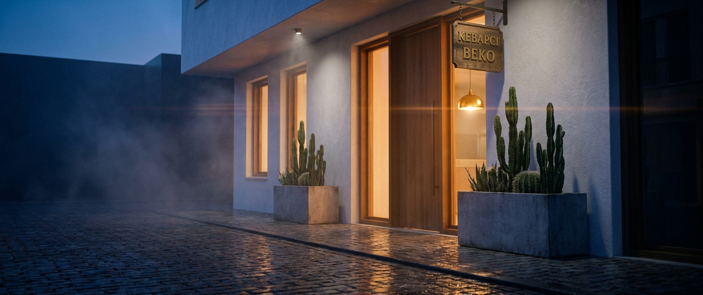
SHOT 01
00:00 → 00:04
Üç perdelik klasik intro yapısı. I. Perde — Mekan & Karakter izleyiciyi Etiler'in modern ocakbaşı kapısından içeri sokar, ocak közlerine yaklaştırır, Ahmet Usta'nın elleri ile tanıştırır. II. Perde — Zanaat kıyma açmadan, şişe çekmeden, alev fışkırmasından, közde patlıcandan, sumak serpişine dek tüm üretim ritüelini izletir. III. Perde — Sunum & Deneyim imza tabakları ve modern bar dokunuşunu doruğa çıkarır, müşterinin lavaşla aldığı son ısırıkla biter.
Tüm sahneler 2.39:1 anamorphic çerçevede, derin siyahlar + közün turuncu-kırmızı ışığı + tek sıcak tungsten üzerine kurgulanmıştır. Müzik: enstrümantal, yavaş giriş — kanun + perküsyon + atmosferik yaylılar (Mercan Dede / Kayhan Kalhor füzyon hissi). Diyalog yok; sadece ateş, çelik, ahşap ve elin doğal sesleri.

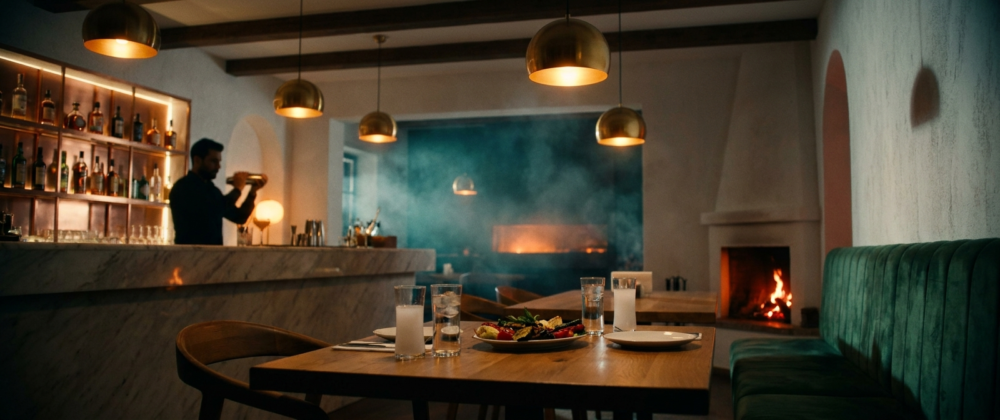
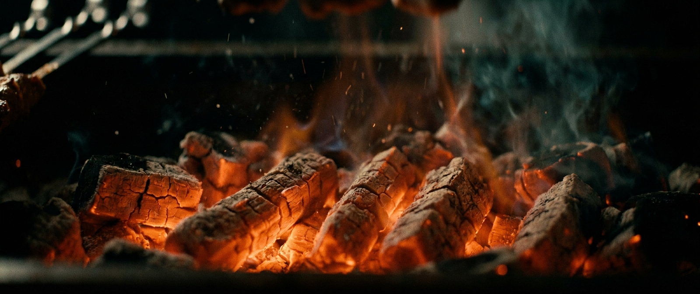
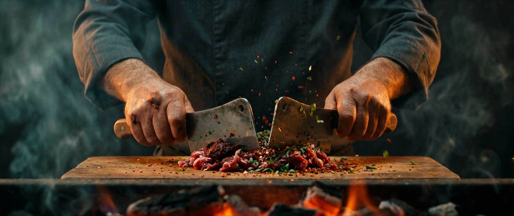
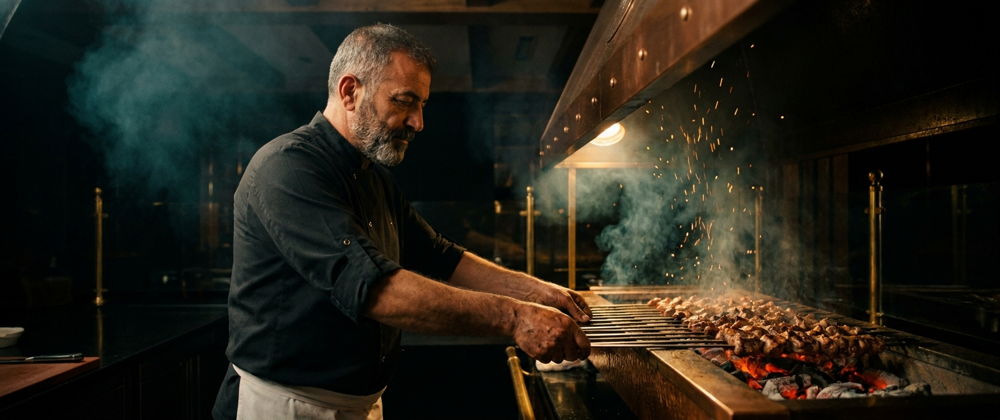
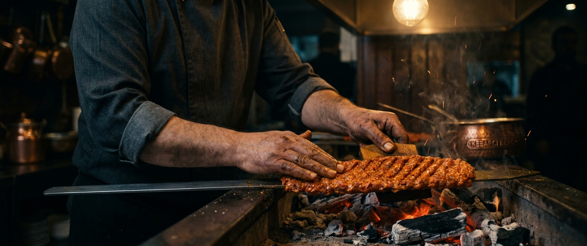
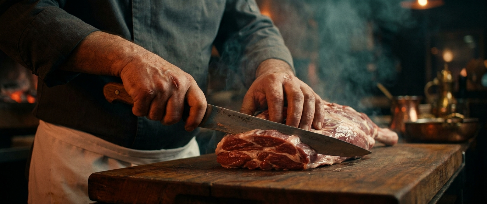
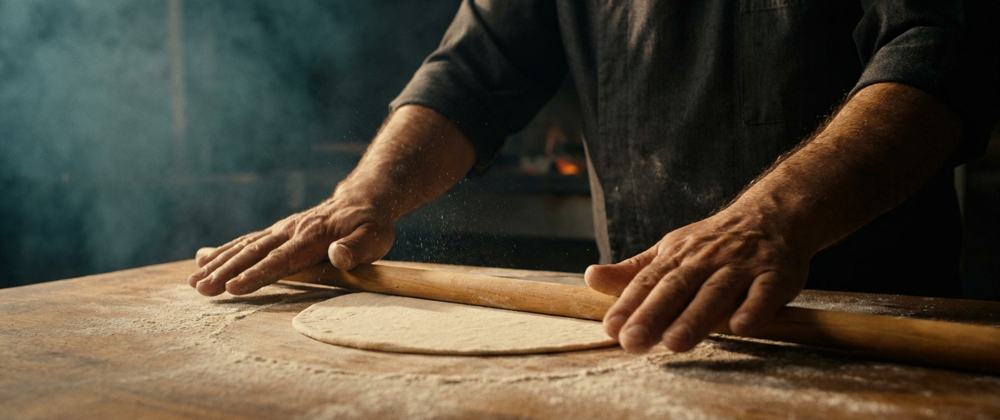
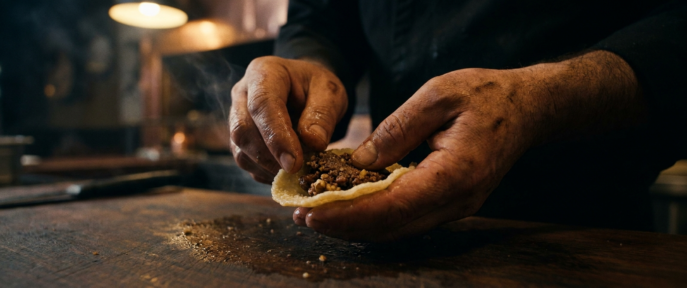
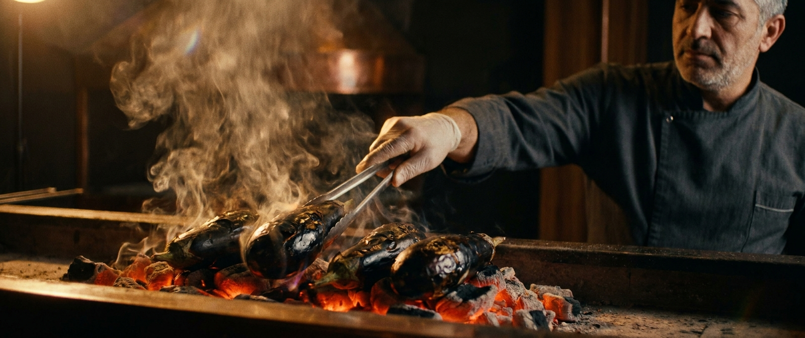
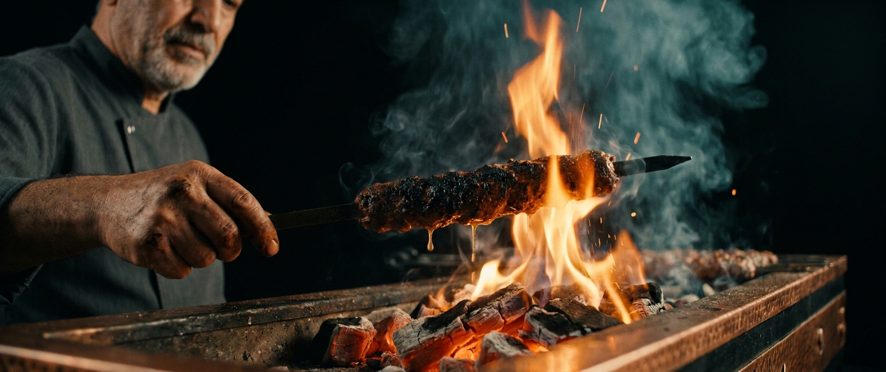
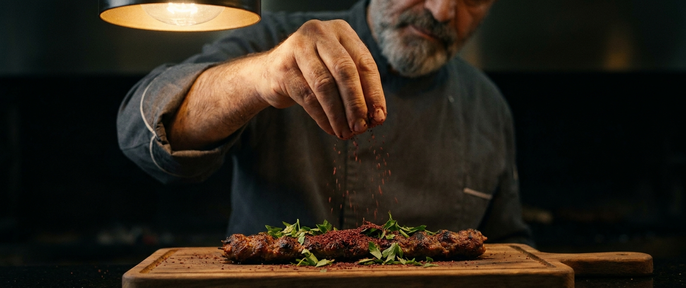
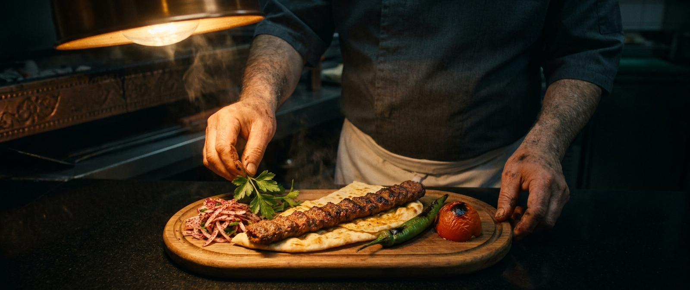
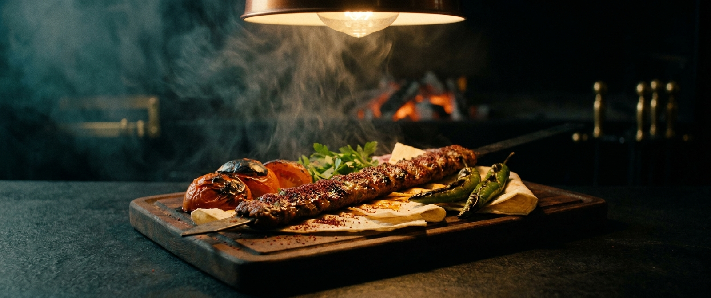
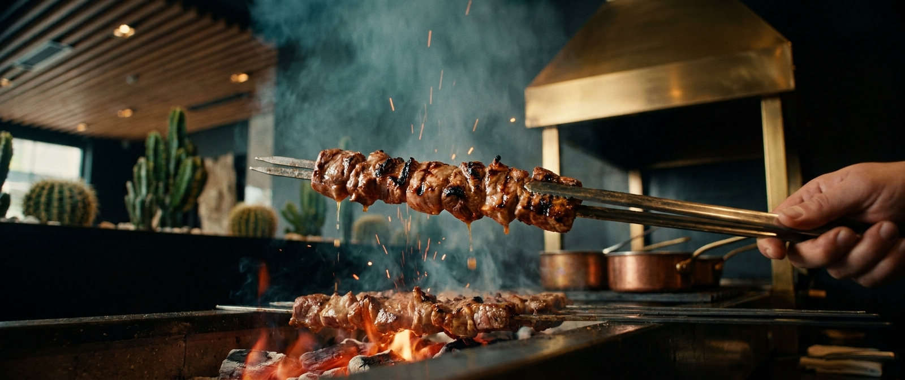
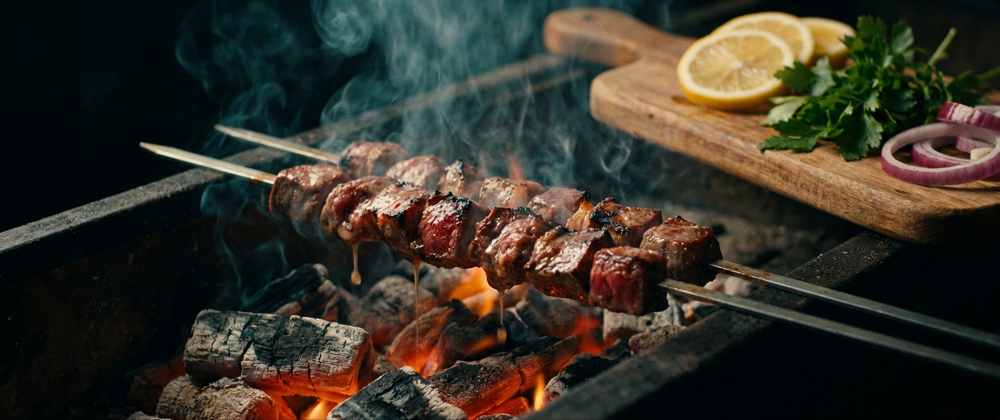
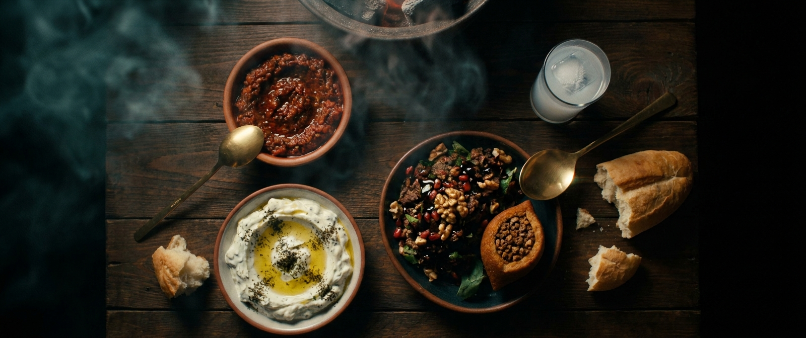
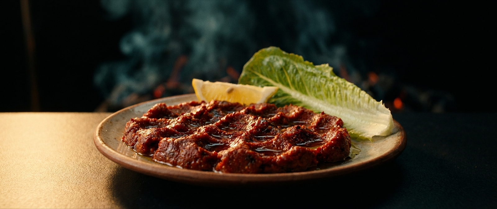
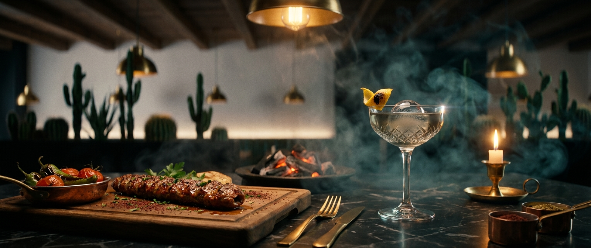
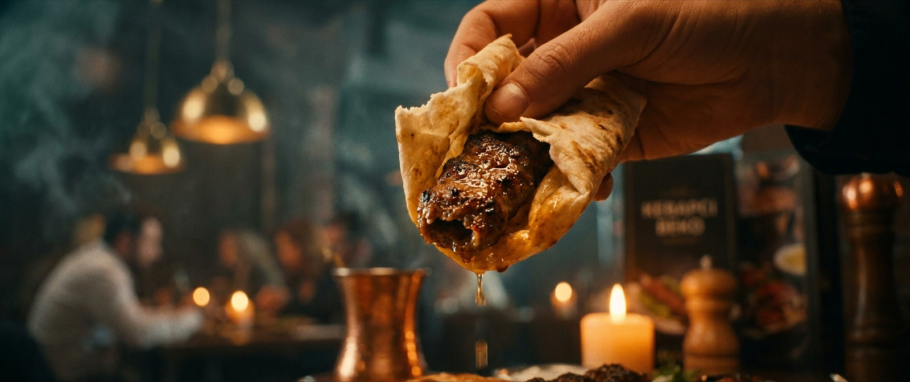